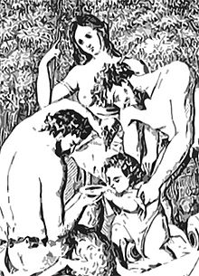

- Panacea (the goddess of universal health)
- Hygieia ("Hygiene", the goddess/personification of health, cleanliness, and sanitation)
- Iaso (the goddess of recuperation from illness)
- Aceso (the goddess of the healing process)
- Aglæa/Ægle (the goddess of beauty, splendor, glory, magnificence, and adornment)
Panacea also had four brothers—Podaleirus, one of the two kings of Tricca, who was skilled in diagnostics, and Machaon, the other king of Tricca, who was a master surgeon (these two took part in the Trojan War until Machaon was killed by Penthesilea, queen of the Amazons); Telesphoros, who devoted his life to serving Asclepius; and Aratus, her half-brother, who was a Greek hero and the patron/liberator of Sicyon. However, portrayals of the family were not consistent; Panacea and her sisters each at times appear as Asclepius' wife instead.[2]
Panacea may have been an independent goddess before being absorbed into the Asclepius myth.[1]
Panacea traditionally had a poultice or potion with which she healed the sick.[citation needed] This brought about the concept of the panacea in medicine, a substance meant to cure all diseases. The term is also used figuratively as meaning "Something used to solve all problems".[3]
Panacea is mentioned at the opening of the Hippocratic Oath:[4]
Ὄμνυμι Ἀπόλλωνα ἰητρὸν καὶ Ἀσκληπιὸν καὶ Ὑγείαν καὶ Πανάκειαν καὶ θεοὺς πάντας τε καὶ πάσας ἵστορας ποιεύμενος ἐπιτελέα ποιήσειν κατὰ δύναμιν καὶ κρίσιν ἐμὴν ὅρκον τόνδε καὶ ξυγγραφὴν τήνδε.
I swear, calling upon Apollo the physician and Asclepius, Hygeia and Panaceia and all the gods and goddesses as witnesses, that I will fulfill this oath and this contract according to my ability and judgment.
A river in Thrace/Moesia took its name from the goddess, and is still known in modern Bulgaria as the river Zlatna Panega ("Golden Panega", from Greek panakeia).
| Panacea |
|---|
|

Panacea (center) administering medicine to a baby (Image by the Veronese physician, J. Gazola, as part of a larger woodcut, 1716) |
| ----------- |